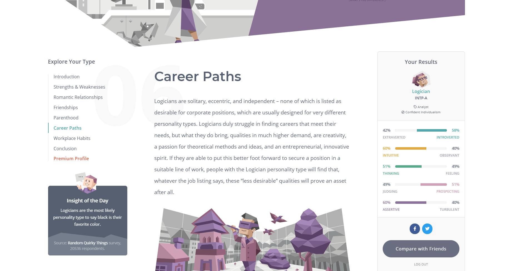
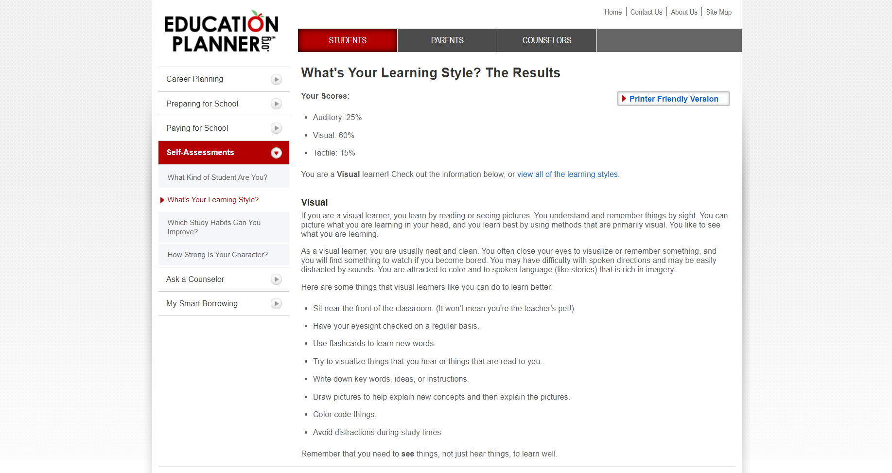
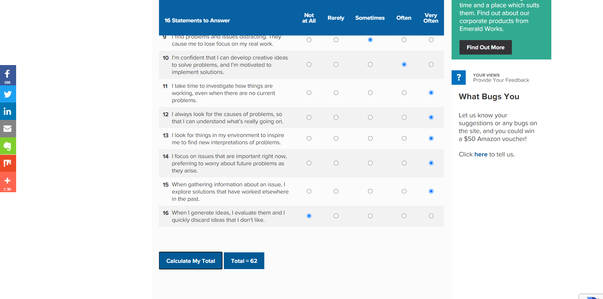
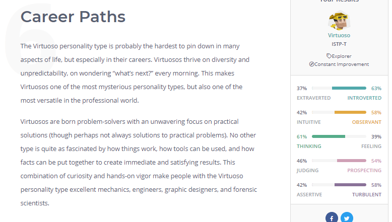
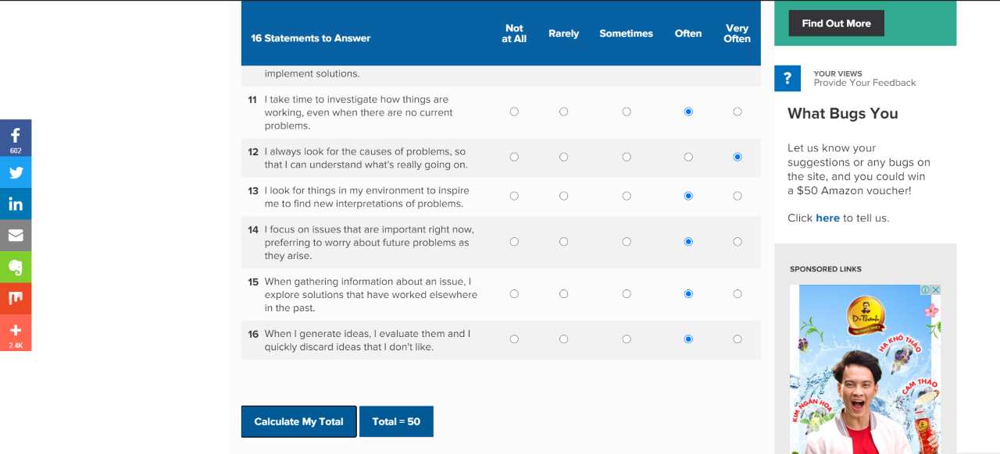

Hello everyone! My full name is Bui Hoang, I’m 22 years old and I’m from Hanoi. Right now, I study a Bachelor of Information of Technology at RMIT Vietnam but before that, I was a student of Hanoi University of Science. I enjoy playing video games and playing soccer with my friends in my free time. I had my first PC when I was 5, so I have approached the computer from a very early. Then, instead of hanging out to the street, I spent all day playing videos game and exploring my PC. For me, that time in part build my IT interests. Before I go to RMIT, I don’t have any experience in IT major but I believe that I will have a good knowledge of IT ecosystems and able to use all common program languages.
The result of my online Myers-Brigg test in 16personalities.com is a Logician . LINK
The result of my online learning style test in EducationPlanner.org is a visual learner . LINK
The result of my online creativity test in mindtools.com is 62/80 (this result show that creativity is one of my strengths, I can engage colleagues and teammates in creative pursuits, and promote creativity in my team and organization)
Hello, my name is Hyun Min kim. I'm 22 years old and I'm from south Korea. I live in Korea for 21 years and I decided to move Vietnam because my father is working here. I'm interested in listing to music, especially K-pop. And I regually work out for fun and health. The reason why I chose this course is the importance of IT has been rising and I thought this will be helpful for my future career. I'm really not familiar with this area because I studied about liberal arts until the end of highschool in Korea.
The result of my online Myers-Brigg test in 16personalities.com is a Virtuoso . LINK
The result of my online learning style test in EducationPlanner.org is a auditory learner . LINK
The result of my online creativity test in mindtools.com is 46/80 ( this result show that my creativity is "work in a progress, I can get to the next level of creativity by working actively with others to create and innovate)


Hi everyone, my full name is Luu Vi Quan, I’m from Hanoi, and I’m currently studying Bachelor of Digital Marketing at RMIT Saigon. I can speak two languages, Vietnamese and English. In my spare time, I enjoy hanging out with my friends and play soccer as my hobby. The reason that I'm mainly interested in IT is its ability to bring everyone closer together by connecting with people all around the world. In terms of IT experience, I currently don’t have any experience, but I’m eager to learn and expand my knowledge in the IT industry.
The result of my online Myers-Brigg test in 16personalities.com is an Entertainer . LINK

The result of my online learning style test in EducationPlanner.org is a tactile learner . LINK

The result of my online creativity test in mindtools.com is 50/80 (this result shows that my creativity is a work in progress, which means I need to share more of my ideas and opinions as well as engage more with my teammates so that the group can resolve the problem together)
Hoang: Database Administrator
Hyun Min: Senior iOS & Android Developer
Quan: Content Manager
The first common thing between iOS & Android Developer and Database Administrator that they all highly required analytical skills. Mobile Developers have to understand what users needed in order to create applications they want to use. Database Administrators must monitor the database performance and evaluate complex information coming from a variety of sources.
Both Content Manager and Database Administrator have to get a strong understand of HTML.
Creativity is the most important skill for Both Content Manager and iOS & Android Developer.
All 3 occupations have to get good communication-skills while that all are required to contact colleagues and customers.
All 3 jobs required a bachelor's degree and 3-4 years of agency experience.
The first common thing between iOS & Android Developer and Database Database Administrator as the name all the tasks and duties of this job is relative to data, so Database Administrator has to know about Data Analysis, UNIX/Linux, SQL, Oracle, and their tool.
iOS & Android developer have to build, test, and deploy mobile apps. Then, the core technical skill of iOS & Android Developer is Java and Objective-C.
Although Database Administrator doesn’t have a high ranking in top occupations, this job play an important role in every company. Data is a treasure that organizations must protect and cherish. Database Administrators are relied on as this treasure guardians.
Database Administrator: For Database Administrator, the most important IT specific skill is SQL, then it’s also needed to know Oracle database server and programing language like JavaScript.
Database Administrator: Database Administrator have to monitor the database performance and evaluate complex information, they also work as a team and effectively with managers so analytical skills, communication skills and problem-solving skills are the most respective general skills for Database Administrator.
Database Administrator: Grapic Design, Business Management, and Business Process.
Database Administrator: Decision Making, Time management and Writing.
After watching all the information, I have a clear view of the top titles and occupations of IT jobs, moreover, I know about technical skills and general skills for each IT occupation. Therefore, that is nothing changed in my view of my ideal job, what I have looked at just help me more understand about Database Administrator and what skill I have to improve.
Name: Ho Duc Hien
IT Profession: Front-end Programmer
I am a Front-end programmer. My job is using HTML, CSS, and JavaScript, to build UX / UI for websites or web applications so that end users can view and interact directly with them. I have to create, maintain, and upgrade the coding stage of the web development process. I also perform hands-on tasks for the company’s web activities aligned with marketing initiatives and website projects. Moreover, I have to research new technologies. Basically, I will design a site to ensure that the users can see information in an easy to read and relevant format when they open a site.
To be a Front-end programmer, I have to proficient programming languages like JavaScript and PHP and be familiar with many tools such as Adobe Photoshop, Adobe XD, Visual Studio Code, phpStorm, Skype, and git. It also need to have a strong understanding of UI, cross-browser compatibility, general web functions and standards
Instead of a Front-end programmer, I have to work as a website quality control and a back-end programmer
Most of the time I work individually. I just mainly interact with Technical Lead, Project Manager, and Website quality control
While I interact with my colleague, we mostly discuss about The API, Error Code, the Project tasks, and data structures
I always contact them(PO) and our Project Maneger at the beginning of the sprint to get the main ideas about all the tasks in that sprint. When they have some troubles with UI UX or bug I'll discuss with them and give some solutions and will be fixed next sprint by a comment on tasks or reply to their comment. Sometime they will join to stand up meeting (by skype or some online platform meeting) during the sprint to see the process of our work. And last but not least I'll find them(PO) with my Project Manager if something come up with documentaries or requirement of the tasks.
Firstly, I have to discuss with my Project Manager and research to limit bugs in code and do wrong customer requirements. Then, I have to estimate the working time and start coding. Finally, I check the function that has been created and fix its bugs.
Research is the hardest work for me. It always consumes my time the most to find the best solution for projects
The technology industry changes every day. New technologies develop each year, and IT professionals need to make sure their skills don’t become obsolete along with old software. So to work in IT area, you need to Deny the thinking that the knowledge in school and always have to be ready and willing to adapt.
An Autonomous Driving (AV), also known as a self-driving car or driverless car, robotic car, is a vehicle that is capable of sensing its environment and moving safely with little or no human input. A human passenger is not required to take control of the vehicle at any time, nor is a human passenger required to be present in the vehicle at all. Autonomous Driving can help the vehicle go anywhere as a traditional car go and do anything as an experienced driver do.
Driverless car work defends on sensors, actuators, complex algorithms, machine learning systems, and powerful processors. All the information input from the environment will be processed by sophisticated software. This software will help the vehicle run follow traffic rules and navigate obstacles. There are 6 of automation levels that mean how technology interferes with the vehicle: from level 1 working as an assistance tool driver to level 6 full automation without human.
In present, driverless cars can run in a specific route without any human action, we have seen more and more autonomous elements becomes a part of our everyday driving lives. The autonomous cars in Level 1 to level 3 is quite common nowadays. Even in many high-end models, autonomous driving become a standard of their cars. For example, automatic parking becomes a characteristic of BMW and Mercedes.
As the software improve day by day and the development of technology and GPS net. Driverless cars in the future will become more convenient and safer. Obviously, the price will come down as technology evolves, all vehicles will be Level 5 fully autonomous in the next future.
2) What is the likely impact?Impact for driver
Autonomous Driving provides increased safety on the road, elimination of driving fatigue, helps drivers being able to sleep during overnight journeys and help people who are not able to drive- due to factors like age and disabilities- could be able to use automated cars as more transport systems. Improving productivity in the workplace as fewer people would have to worry commuting and their stresses.
Furthermore, the fact that people will change to use autonomous driving instead of traditional cars. A lot of people work mainly by vehicle will be affected because of it. To be more specific, people work in delivery services and taxi services can lose their job with the robot.
Impact for Road safety
The improved safety of roads filled with autonomous vehicles. By removing the human element of driving such as emotions, actions and delay in reactions. We can reduce a lot of the majority of traffic accidents today. Truly, as a reposted in 1.8 million testing miles, Google’s self-driving just had 13 accidents and all of them were caused by the other cars. And with the development of technology, their safety rate will be improving day by day.
Impact for Insurance
Because of no driver, a lot of insurance policy will be changing for suitable will the new type of cars. For example, they will have insurance for the owner of the vehicle that have errors in the software. A policy cover customers against hacking car software systems.
3) How will this affect you?As an IT student, Autonomous Driving opened my mind about how the development of technology nowadays and how technology improves the world we live in now. Furthermore, researching this field help me find out that Autonomous Driving is a potential area that I should study.
As a driver, I see Autonomous Driving as the most convenient and important technology for vehicles. A driverless car can help me more freely and safely than a traditional car. If I am tired and cannot control the vehicle, the driverless car can safety run by driveling itself.
Robots are related to a scientific term, robotics which refers to a compilation of science, technology and engineering. It is a machine-produced to replace human actions in any possible way. Most people understand or first heard about robots through the introduction in films and books such as Wall-E, Robocop and R2-D2. These concepts of robots in the movies might seem unrealistic and impossible to create at first, but with technologies nowadays, anything is possible in the future.
For robots to work, it must be created using complex technologies and innovative developments. Many types of robots existed in the industrial world, but in general, robots require electrical components to operate and power the machinery. Another way of saying this is like the need for a battery in a TV remote control so that it can be switch on or change TV channels. The components of robots are somewhat very similar to human beings ones as they also need a muscle system, a brain system, a body structure, a sensor system and a power source. Some might say robots are the replica of humans, where the only thing they differentiate from humans is feelings and emotions. In terms of technologies being used, these comprise artificial skins, muscles, nose, BioTac sensor, and elastic cable.
In the present day, robots have been contributing to the operation of many businesses around the world. According to research done in 2005, 90% of robots are used to assemble cars in the automotive industry(ref). It is the most common industry for robots to be implemented where a robotic arm is invented to put different parts of the car together. These types of robots are called autonomous robots where they are created to substitute human works without any pay grade and breaks as it’s more efficient and effective. Another industry that uses robots is the agricultural industry where a similar type of flying drone is navigated by a person from afar to identify types of plants as well as feeding them. In this case, the robots are called teleoperated robots, where it is operated by humans to carry out difficult tasks in extreme conditions. Moreover, the most recent type of robots that have been trending all over the world and bring a shock to people’s face is humanoid robots. It refers to a machine that is build to copy human’s behaviour and perform similar tasks such as crying, laughing, running jumping and carrying objects. An example of this type of robot is Sofia, the first robot announced and confirmed as a citizen of Saudi Arabia.
As we all know what robots are capable of right now in the world, imagine in a few years, what else can they do? They already conquered and made a positive impact in the business industry, hence there would be no surprises if they ended changing the way education, security, entertainments and our lifestyle operates. An example of the influence of robots in education is humanoid robots teaching and connecting with students from all over the world. A single teacher couldn’t focus on more than one students learning process and journey, whereas the robots can assist and guide each student to bring out the best of themselves in school. An example of robots improving security might be facial recognition and drone footage to identify criminals which helps all the cops and detectives to bring in the criminal quicker, hence reducing all the crimes in general and making the world a safer place. In terms of entertainment and lifestyles, virtual reality will be introduced in our everyday lives where our voice would control the house through voice activation.
2) What is the likely impact?With the revolutionising of robots, it can both impact people's lives positively and negatively. Typically, in businesses, the use of robots affects them positively as there is more work done, leading to an increase in productivity, hence achieving the business’s profitability. Workers sometimes carry out the task in an unproductive manner when they get demotivated or bored with their current job, which will slow down the production process and affect negatively on the sales of the business. Therefore, there are no doubts that robots will improve business operations towards the achievement of business objectives.
However, with the robots introduced in the workplace, the people that are affected the most are the factory workers where their assembling tasks are replaced by robotic arms to carry out the job instead as it’s more cost-effective and productive. Disagreements in the workplace occurred when the employees feel like they are no longer needed in the business and hence causes the unemployment rate of the world to increase. Another way of saying this is the employees are made redundant and are forced to resign from the company to find a job elsewhere. Soon in the workplace, there would be no sign of a human being where the whole factory would consist of robots army assembling different components to finalise the product.
3) How will this affect you?For myself, the implementation of robots in my own home and everyday life would somewhat affect positively in the short term. I no longer need the install of switches or appearance of remotes anymore as I only need my voice to control and operate the whole house. In terms of security, my family and I would be more protected as there is a facial recognition system installed so that no strangers or thefts can enter in or out of the house without alarms or alerts straight to the police. Everything would become more accessible and more convenient, and everyone in my family could be relieved and live their lives to the fullest. However, in the long term, it might negatively affect my daily life when the voice activation would oppose me with system malfunction and the whole system hacked by thieves and hackers. Another disadvantage would be my family and I becoming too dependent on the use of voice activation and refusing to stay active and healthy, both physically and mentally. Therefore, I’m not quite sure with the overall implementation of robots in my everyday life as it could result in some unforeseen consequences. As for myself, I hope the use of robots would be used wisely and appropriately to grow our community and take part in making the world a better place.
From self-driving cars to daily necessities such as smartphones and artificial intelligence robots. The electronic devices, computers, and machines we use are intelligently handling and functioning. Thanks to the "things" that have become smarter, our lives have become more pleasant and faster, and literally more comfortable.
It is no exaggeration to say that machine learning is being used in most areas, including computer science. From computer vision (text recognition, face recognition), to speech recognition and handwriting recognition, information search and search engine, bioinformatics (genetic analysis, disease diagnosis), computer graphics and games (animation, virtual reality), and robotics (pathways exploration, unmanned vehicles) are being applied in many places.
The impact of AI on companies will depend on industries, organizations and customers. Stephen Prentiss Gartner, a fellow and vice president, cited a lawyer who had to spend a long period of time in education and training. Companies that employ lawyers should pay each lawyer an appropriate level of salary and allowance to cover the training costs.
On the other hand, smart machines to replace lawyers also require a long, costly training period. However, for smart machines, after the first one, the company can introduce additional smart machines at a fraction of the cost.
Financial services are also industries where tasks such as loan handling and insurance damage assessment can be automated. The AI is expected to hurt employment in some industries. However, Gartner predicts that while AI and automation in most industries handle regular and repetitive tasks, existing personnel will be able to spend more time raising service levels and dealing with more complex tasks. In addition, many other industries are expected to benefit from the lowered level of stress in high-tension work environments.
Vice President Stephen Prentiss said AI and humans will ultimately have different differences, saying AI is very well-defined and best at solving narrow problems, while humans are good at defining problems that need to be solved and solving complex problems. AI and humans also have a variety of knowledge and skills, and can solve problems in various ways. They can collaborate with each other, and humans can adapt to such changes if the situation changes significantly."
2) What is the likely impact?3) How will this affect you?
@
System requirements and hardware are some of the critical factors hamper people from using apps and programs. Nowadays, the prices of technology devices are more and more expensive that required customers to invest so much money for their computers. Some occupations even required their employees to have a strong computer. My IT Team Project is making a proprietary software application for desktop sharing, and the user can use apps and programs without installing it on their computer. In overall, this app can help their users break the limit of hardware and freely enjoy technology.
Hardware problem
A proprietary software application
All In One
All computer users
Basically, my all will work as a sharing desktop app, while user a uses my app to use a program, for example, they use my app to use Adobe Premiere. The request for using Adobe Premiere will be spent on the main server. Then from the main server, the signal will move to Workstation. From here the Workstation, the Adobe Premiere will be open and spent back the working screen to the main server and from the main server to the computer of the user. As the circle I given above, this all will received all activities that users do in their devices in the working display screen and give feedback for the main server then from server to Workstation. To be clearer, the users will work with another computer that has Adobe Premiere, their devices just play the role of a screen and receiving user’s interaction, the app just plays the role of a streaming video app.
The initial page when the user opens the app, the user has to login in here to open the app. If users don’t have their account, the app will request users to sign up or create an account in here. Furthermore, the app will have a function to remember the account login that device.
2-Menu ScreenThe main page of the app is designed as a huge library include a hundred apps. all the apps will be a group in the major and their functions such as System- Security, Office, Multi-Media, Programming-Design, Applicable Software, Game and, Movie. All the apps will be sorted by the ranking of users in each major.
3-Confirmation ScreenWhile clicking on the app you want to work in, the user will be moved to the confirmation page that asked the user if they want to work in this app or not.
4-Working SceenUser will work in the app they want in this page
5-Supporting ScreenThis page will have a tutorial for newbie and a 24/7 support chatting to answer and support users. Moreover, user can be able to change the app language to another one in this screen
Tools and Technologies requiredA big cloud database server
A Workstation
A program to transfer information to the server.
An agreement from many technology companies to allow their products in this app.
Skills RequiredA huge range of knowledge of cloud computing network and its service
A wide knowledge about hardware infrastructure, data center facilities and virtualization technologies.
Programming languages relative to cloud computing such as Python, Java, ASP.NET, PHP and RUBY.
OutcomeBeing a helpful and friendly app for low-quality computer’s user.
Changing the habit of customers while they buy a new device. They don’t need to buy a powerful computer for their work and a console device for their entertainment, all they need just an app can connect every app they want.